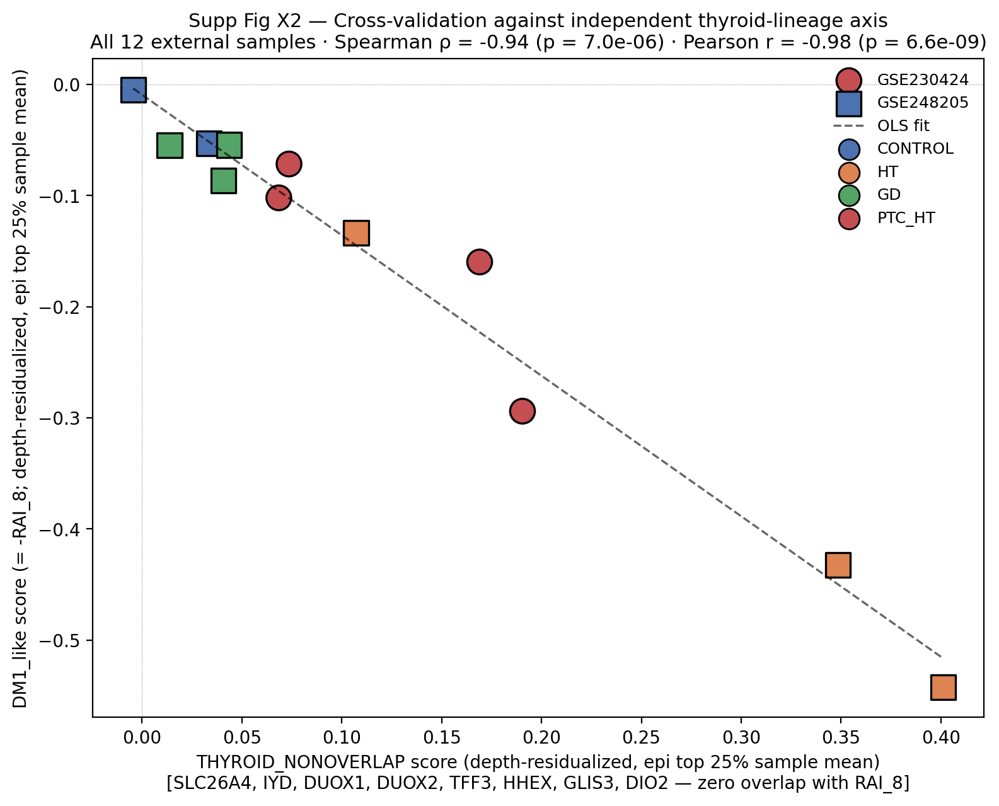
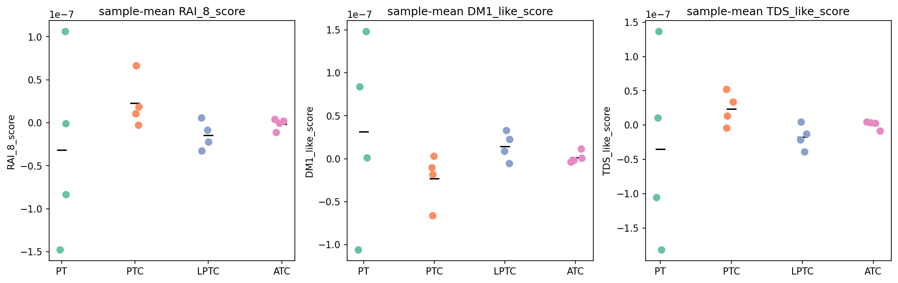
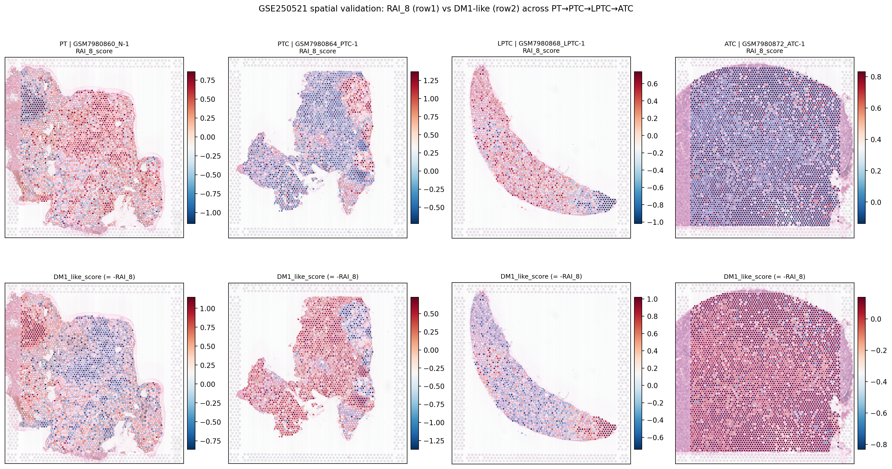
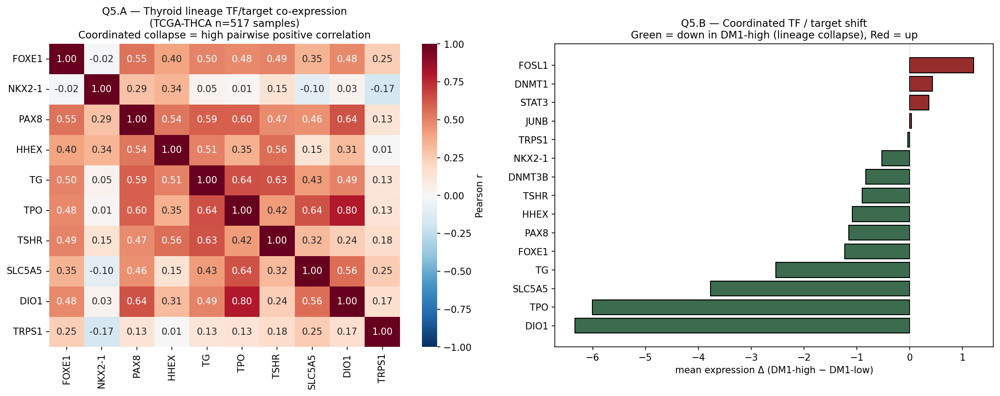
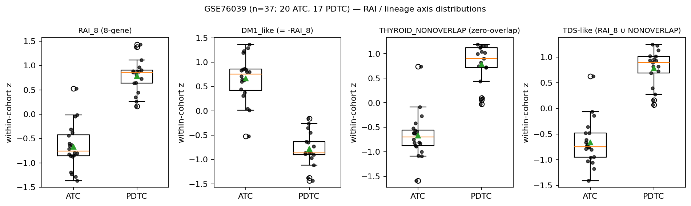
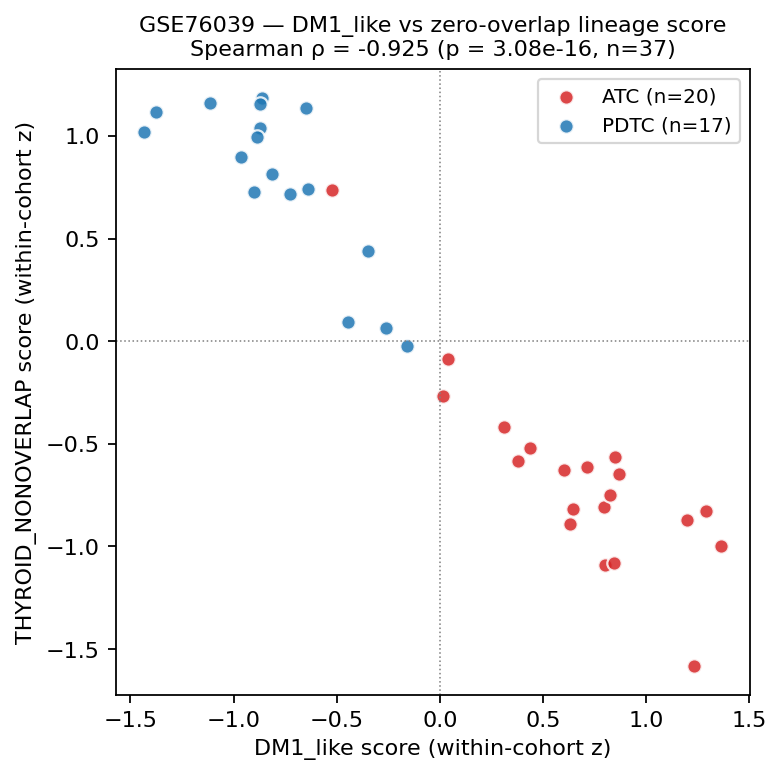

1. 한 줄 결론
TCGA anchor
External cohorts
Used samples
Main correction
Driver mutation은 중요하지만 종양의 현재 기능 상태를 전부 설명하지 못한다.
RNA expression으로 갑상선다운 기능을 잃어가는 정도를 하나의 축으로 읽는다.
8-gene, zero-overlap genes, pan-genome genes, external cohorts가 같은 방향인지 확인한다.
재현성 높은 lineage axis를 main으로 두고, 불안정한 TROP2는 내린다.
2. 비전공자 배경
갑상선은 원래 몸 안의 요오드를 모아서 갑상선호르몬을 만드는 기관이다. 그래서 정상 갑상선 세포는 SLC5A5, TPO, TG, TSHR 같은 유전자를 켜고 있어야 한다. 암이 더 공격적인 상태로 변하면, 세포가 “갑상선다운 기능”을 잃고 이런 유전자가 꺼지는 경향이 있다. 이것을 분화가 떨어진다 또는 dedifferentiation이라고 부른다.
기존 갑상선암 연구는 BRAF, RAS, TERT 같은 DNA 변이를 많이 본다. 그런데 변이는 “시동 스위치”에 가깝고, 실제 세포가 지금 어떤 상태인지 전부 설명하지는 못한다. Paper 1은 이 빈틈을 RNA expression으로 읽는 갑상선 lineage axis로 채운다.
2.1 용어를 먼저 풀어쓰기
| Term | 쉬운 설명 | 이 논문에서의 역할 |
|---|---|---|
| Lineage | 세포가 어느 장기/계통의 세포다운 정체성을 갖는지. | 갑상선암이 “갑상선다운 기능”을 얼마나 유지하는지 보는 중심 개념. |
| RAI | 방사성요오드 치료. 갑상선 세포가 요오드를 잘 받아들여야 작동한다. | SLC5A5/TPO/TG/TSHR 같은 유전자가 내려가면 RAI-like 기능도 약해졌다고 해석할 수 있다. |
| DM1_like | Lineage genes가 낮아진 상태를 반대로 뒤집어 만든 점수. | 높을수록 갑상선 기능 상실/dedifferentiation 방향. |
| Zero-overlap validation | 처음 쓴 8개 유전자와 겹치지 않는 다른 유전자 세트로 같은 결론을 확인하는 방식. | “8개 유전자만의 착시”라는 비판을 막는 가장 중요한 방어. |
| Driver orthogonality | BRAF/RAS/TERT 같은 driver mutation과 완전히 같은 이야기가 아니라는 뜻. | 변이 정보에 더해 RNA 상태축이 추가 설명력을 준다는 Paper 1의 핵심 위치. |
| TROP2/TACSTD2 | 암에서 관심받는 세포표면 marker/target 후보. | 이번 Paper 1에서는 제목/주장 아님. bulk external replication이 약해 exploratory로 내림. |
3. 전체 논리 흐름
초기에는 target marker까지 headline으로 끌고 가려 했지만, 외부 bulk validation에서 TACSTD2는 안정적으로 재현되지 않았다.
재현성이 강한 본체는 driver와 독립적인 갑상선 기능 상실 축이다. TROP2는 내려놓고 axis를 전면에 둔다.
3.1 분석 사고 스토리: 우리가 어떻게 결론을 좁혀 왔는가
이 논문은 “좋아 보이는 그림을 모은 것”이 아니라, 약한 가설을 계속 떨어뜨리고 끝까지 살아남는 축만 남긴 구조다. 학부생 관점에서는 아래 순서로 읽으면 분석자의 판단 과정이 보인다.
Question 1
이게 그냥 BRAF/RAS 변이 이야기인가?먼저 가장 흔한 반론을 확인했다. Driver-only 정보가 DM1/DM2 축을 만들지 못하면, RNA 상태축이 driver mutation과 별개의 정보를 줄 가능성이 생긴다.
Question 2
8개 유전자를 골라서 만든 착시인가?그래서 TIERA67, pan-genome, zero-overlap gene set으로 다시 확인했다. 서로 다른 gene universe가 같은 방향을 말하면 cherry-pick 가능성이 줄어든다.
Question 3
TCGA 안에서만 보이는 현상인가?GSE76039와 GPL570 thyroid cohorts를 processed-only로 확인했다. dataset을 섞지 않고 각 dataset 내부에서 z-score를 계산해 batch effect를 줄였다.
Question 4
기전적으로 말이 되는가?Lineage TF collapse와 STAT3/AP1/DNMT arm을 확인했다. 이는 causality가 아니라 “생물학적으로 말이 되는 방향인지”를 보는 support layer다.
Question 5
TROP2를 headline으로 밀 수 있는가?아니다. TCGA에서는 흥미롭지만 external bulk microarray에서는 안정적이지 않았다. 그래서 논문 신뢰도를 위해 TROP2를 내렸다.
Final answer
살아남은 본체는 lineage differentiation axis다.최종 주장은 “driver-orthogonal thyroid-lineage differentiation axis”로 좁혀졌다. 이것이 가장 강하고 안전한 Paper 1 identity다.
3.2 Evidence ladder: 독자가 믿어도 되는 순서
| Level | Evidence | Reader should conclude | Do not conclude |
|---|---|---|---|
| 1 | TCGA 8-gene vs zero-overlap thyroid module anti-correlation | Lineage silencing axis is not a panel-overlap artifact. | It proves treatment response. |
| 2 | GSE76039 + GPL570 external expression cohorts | Direction-consistent external expression validation exists. | It is clinical/survival validation. |
| 3 | Pan-genome/TIERA67 robustness | The axis is broader than the 8-gene readout. | The 8 genes discovered everything alone. |
| 4 | TF_collapse + STAT3/AP1/DNMT pattern | Mechanism is biologically plausible. | Causality is proven. |
| 5 | TCGA outcome association | The axis may carry prognostic information in TCGA. | External survival validation is done. |
| 6 | TROP2/TACSTD2 | Exploratory future direction only. | TROP2 is externally validated or title-worthy. |
4. 핵심 결과와 그림 해설
그림 읽는 법 1
색/군집이 갈라지는가?샘플들이 mutation보다 expression-state로 더 잘 갈라지는지 본다.
그림 읽는 법 2
서로 다른 gene set이 같은 말을 하는가?8-gene과 zero-overlap module이 같은 방향이면 artifact 가능성이 낮다.
그림 읽는 법 3
외부 데이터에서도 방향이 같은가?절대값보다 dataset 안에서 normal/PTC/ATC가 움직이는 방향을 본다.
4.1 Driver orthogonality: 변이가 이 축을 만들지 않는다
이 그림은 BRAF/RAS/TERT 같은 driver 정보만으로는 DM1/DM2 axis를 정의하기 어렵다는 것을 보여준다. “변이가 중요하지 않다”가 아니라, 이 논문이 말하는 RNA 상태축은 변이와 별개로 추가 정보를 준다는 뜻이다.

4.2 Axis robustness: 넓은 유전체에서도 같은 축이 보인다
8개 유전자만으로 우연히 만든 축인지 확인하기 위해 더 넓은 gene universe를 사용했다. 결과는 TIERA67과 pan-genome top-5000 MAD가 비슷하게 높은 ARI를 보였다. 따라서 8-gene은 축 자체가 아니라, 축을 간단히 재는 readout으로 쓰는 것이 안전하다.

4.3 TCGA와 spatial cross-validation
가장 중요한 내부 검증은 zero-overlap module이다. 8-gene과 전혀 겹치지 않는 다른 갑상선 lineage genes도 DM1_like와 강한 반대방향으로 움직인다. 이는 panel-overlap artifact가 아니라 실제 lineage silencing이라는 방어선이다.




| Figure asset | What it shows | Main use | Claim boundary |
|---|---|---|---|
| F3_driver_neutrality | Driver-only information does not define the axis. | Orthogonality defense. | Does not deny driver biology. |
| F4_pangenome_robustness | Broad gene sets reproduce the structure. | 8-gene is a readout, not the whole discovery. | Do not overstate as universal classifier. |
| s_tcga_4panel | DM1_like and zero-overlap module are strongly anti-correlated. | Best TCGA internal validation. | Expression-state claim only. |
| SuppFig_X2 | Spatial non-overlap cross-validation. | Strong supplement. | No H&E inference claim. |
| m/q1/q5 mechanism figures | Lineage TF collapse and inflammatory/epigenetic arm. | Biological plausibility. | Not causal perturbation proof. |
4.4 Mechanism support: lineage TF collapse and STAT3/AP1/DNMT
FOXE1, NKX2-1, PAX8 같은 lineage transcription factors는 갑상선 세포 정체성을 유지하는 조절자다. 이들이 약해지고 STAT3/AP-1/DNMT arm이 올라가는 패턴은 “갑상선 기능 상실”과 맞아떨어진다. 단, methylation 실험이나 perturbation 실험이 없으므로 causal proof가 아니라 supportive mechanism이다.



5. 외부 검증: GSE76039 + GPL570 pack
| Dataset | Role | Samples | Take-home |
|---|---|---|---|
| GSE76039 | Advanced anchor | PDTC/ATC n=37 | ATC shows stronger lineage silencing than PDTC; no survival/mutation claim. |
| GSE33630 | Main external replication | ATC/PTC/normal n=105 | Largest GPL570 cohort; strongest lineage effect sizes. |
| GSE65144 | Main supporting | ATC/normal n=25 | Clean ATC vs normal contrast; lineage axis direction-consistent. |
| GSE29265 | Supplement | ATC/PTC/paired-normal n=49 | Direction-consistent, smaller effects. |
| GSE53157 | Sensitivity | PDTC/PTC/FVPTC/FTC/normal n=26 used | Direction-consistent but PDTC arm is underpowered. |
| GSE126698 | Dropped | RNA-seq metadata only | No per-sample processed expression matrix; raw alignment forbidden. |
| Score | Gene logic | Expected advanced-disease direction | Why it matters |
|---|---|---|---|
| RAI_8_score | SLC5A5, TPO, TG, TSHR, PAX8, NKX2-1, FOXE1, DIO1 | Lower in ATC/advanced disease | Compact readout of iodine-handling and thyroid identity. |
| DM1_like_score | Negative of RAI_8 | Higher in ATC/advanced disease | Simple direction flip: higher means lineage-silenced. |
| THYROID_NONOVERLAP_score | SLC26A4, IYD, DUOX1/2, TFF3, HHEX, GLIS3, DIO2 | Lower when DM1_like is high | Zero-overlap validation of the same biology. |
| TF_collapse_score | FOXE1, NKX2-1, PAX8, HHEX | Lower in lineage-silenced tumors | Shows the transcription-factor backbone is collapsing. |
| STAT3_AP1_DNMT_score | STAT3, FOSL1, JUNB, DNMT1, DNMT3B | Higher with DM1_like | Supportive mechanism arm, not causal proof. |
| TACSTD2_z | TACSTD2/TROP2 | Not stable enough externally | Reason for demotion from headline. |
5.1 What the GPL570 figures mean


| Question | Best figure/table to look at | Answer |
|---|---|---|
| “외부 데이터에서도 갑상선 기능 상실이 보이나?” | Boxplots + direction-consistency forest | Yes, lineage axis is direction-consistent across the usable cohorts. |
| “8-gene panel만의 착시는 아닌가?” | DM1_like vs THYROID_NONOVERLAP scatter | No, a zero-overlap thyroid module shows the opposite direction. |
| “플랫폼이 달라도 보이나?” | GSE76039 anchor + GPL570 pack | Yes for expression-direction validation, with platform caveats. |
| “TROP2도 외부검증 됐나?” | TACSTD2/TROP2 rows and caution figures | No. Bulk microarray replication is heterogeneous, so it is demoted. |
| “임상/생존 validation인가?” | Claim boundary table | No. This is external expression validation only. |
5.2 GSE76039 anchor figures



6. 표로 보는 claim boundary
이 섹션은 논문을 강하게 만들기 위한 “말할 수 있는 것 / 말하면 안 되는 것” 지도다. 핵심은 강한 축은 전면에 두고, 약한 TROP2와 H&E/WSI 주장은 내려놓는 것이다.
| Claim | Status | Plain-language meaning | Boundary |
|---|---|---|---|
| Driver-orthogonal thyroid-lineage differentiation axis | MAIN | 유명 driver mutation과 별개로 갑상선 기능 상실 축이 있다. | Main title and main claim. |
| 8-gene compact RAI-lineage readout | MAIN TOOL | 축을 간단히 측정하는 8개 gene 계기판. | Not discovery premise; not title. |
| Zero-overlap module validation | MAIN DEFENSE | 8-gene과 겹치지 않는 다른 gene set도 같은 축을 읽는다. | Best anti-artifact argument. |
| GPL570 external expression validation | MAIN/SUPP | 외부 thyroid expression data에서도 같은 방향. | Expression validation only. |
| STAT3/AP1/DNMT mechanism arm | SUPPORTIVE | 축이 내려갈 때 mechanism-like markers가 같이 움직인다. | Supportive, not causal proof. |
| TACSTD2/TROP2 | DEMOTED | TCGA에서는 보이지만 GPL570 bulk replication은 불안정하다. | No title, no main claim, no general external-replication claim. |
| Image/H&E inference | DROP | 조직 이미지에서 DM1을 읽는 시도는 이번 Paper 1 claim에서 제외. | No WSI, no H&E-DM1 retry. |
| Use this | Why safe | Avoid this | Why unsafe |
|---|---|---|---|
| External expression validation | Matches the actual GPL570/GSE76039 analysis. | Clinical validation | No prospective clinical endpoint validation was done. |
| Direction-consistent lineage silencing | Describes replicated sign/direction across cohorts. | Progression proven | Cross-sectional histology groups do not prove temporal progression. |
| Advanced-disease replication | PDTC/ATC contrasts support advanced disease context. | Survival validation | External survival analysis was not performed. |
| Zero-overlap module validation | Technically precise and defensible. | Fusion validation | Fusion/mutation validation was not part of this analysis. |
| TROP2 exploratory marker | Reflects heterogeneous external bulk evidence. | TROP2-targetable headline | External replication failed/heterogeneous; no treatment response evidence. |


7. Figure / table plan
처음 보는 독자가 따라오려면 figure 순서는 “왜 driver만으로 부족한가 → 축이 진짜인가 → 외부에서도 보이나 → mechanism은 무엇인가 → claim boundary는 어디인가” 순서가 가장 안전하다.
| Figure | Content | Reader question answered | Status |
|---|---|---|---|
| F1 | Driver landscape orthogonality | Why is this not just BRAF/RAS again? | Main |
| F2 | Axis robustness + 8-gene compact readout | Is the axis real beyond the 8 genes? | Main |
| F3 or F4 | External expression validation: boxplots, zero-overlap scatter, forest | Does the lineage axis reproduce outside TCGA? | Main candidate / strong supplement |
| F4 or F5 | TF_collapse + STAT3/AP1/DNMT support | What biology might explain the axis? | Main or supplement |
| Supplement | Spatial non-overlap validation and QC heatmaps | Does this hold in spatial data and are genes measured? | Strong supplement |
| Internal/Supp only | TACSTD2/TROP2 | Is there a target hypothesis? | Demoted |
| Evidence block | Main figure? | Supplement? | Reason |
|---|---|---|---|
| Driver orthogonality | Yes | Extra driver panels if needed | This explains why the paper is not another BRAF/RAS paper. |
| Axis robustness / pan-genome | Yes | Parameter sensitivity | Protects against “8-gene cherry-pick” criticism. |
| External expression validation | Yes or very strong supplement | Full cohort-level tests | This is the strongest new validation layer. |
| Mechanism support | Maybe | Yes | Useful biology, but should not outrank external validation. |
| Outcome/KM/Cox | Maybe | Yes | Keep bounded to TCGA outcome support. |
| TROP2 | No | Internal/supp only | Not stable enough for headline. |
| Table | Purpose | Source |
|---|---|---|
| External cohort access summary | Shows no extra datasets and processed-only compliance. | external expression FULL RESULTS |
| Sample metadata summary | Shows histology labels and sample counts. | sample_metadata.tsv |
| Gene coverage table | Shows all module genes are measured. | external_gene_coverage.tsv |
| Score tests | Shows Mann-Whitney U and Cohen's d per contrast. | external_score_tests.tsv |
| Direction consistency | Shows advanced-vs-comparator signs across cohorts. | external_direction_consistency.tsv |
| Forbidden wording table | Prevents overclaim in manuscript and cover letter. | final strategy memo |
8. TROP2 demotion


Do not imply: therapy response is proven, survival was externally validated, fusion biology was validated, or TROP2 is the headline.
9. 다음 행동
- Paper 1 title recommendation: A thyroid-lineage differentiation axis stratifies thyroid cancer beyond canonical driver mutations.
- Use the external validation panel as F3/F4 candidate or first strong supplementary figure.
- Keep 8-gene as compact readout, not discovery premise.
- Keep TROP2 in supplement/internal only unless future wet-lab/IHC evidence changes the claim envelope.
- Return to user-written Hook/Aim voice sections after this web integration.
10. 앞으로 나아가야 할 방향
Paper 1은 더 많은 데이터를 붙이는 단계가 아니라, 이미 확보한 evidence를 가장 선명한 이야기로 정렬하는 단계다. 다음 방향은 분석 확장이 아니라 claim discipline, figure hierarchy, reader onboarding이다.
Now
Hook/Aim을 axis 중심으로 고정첫 문단에서 TROP2를 빼고, driver-orthogonal thyroid-lineage differentiation axis를 바로 세운다.
Next
External validation을 F3/F4로 승격 검토GPL570 + GSE76039는 독자에게 “이게 TCGA만의 현상인가?”라는 질문을 답하는 위치에 둔다.
Guardrail
TROP2/H&E/WSI는 재상향 금지새 실험 없이 headline으로 올리면 논문 전체 신뢰도가 떨어진다.
| Workstream | Do next | Do not do | Output |
|---|---|---|---|
| Title/Hook | Lead with driver-orthogonal lineage axis. | Bring TROP2 back into title. | User-written Hook draft. |
| Figure order | Place external validation before weaker target hypotheses. | Hide validation deep behind TROP2. | Final F1-F5 map. |
| Methods | Keep processed-only external expression method concise. | Add raw processing or new GEO. | Methods scaffold only. |
| Results | Describe direction-consistent lineage silencing. | Say progression or clinical validation is proven. | Result scaffold bullets. |
| Future experiments | List TROP2/IHC/wet-lab as future optional validation. | Claim treatment response now. | Limitations/future direction note. |